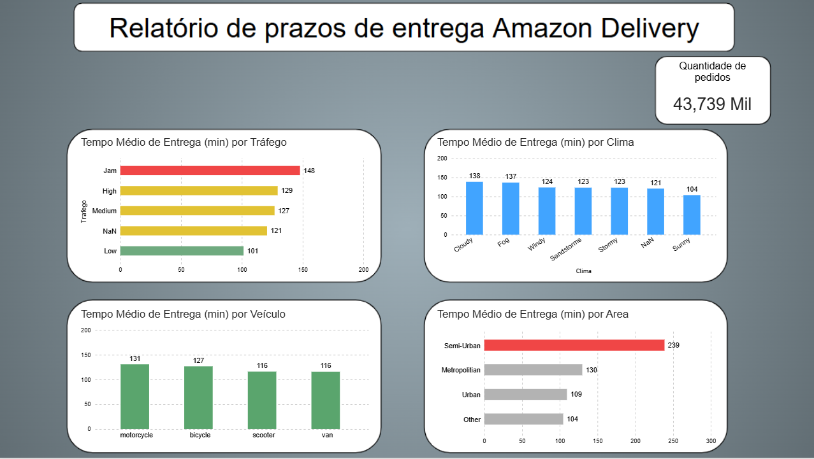

Sobre Mim
Graduando em Análise e Desenvolvimento de Sistemas (ADS) e em transição para a área de Dados. Minha bagagem em rotinas administrativas e processos operacionais me permite analisar dados sempre sob a perspectiva do negócio, identificando onde estão os gargalos e as oportunidades de ganho.
O que faço no dia a dia de Dados:
- • Análise & Visualização: Construção de dashboards interativos no Power BI (DAX, Power Query) e Excel Avançado, focando em Storytelling e clareza visual.
- • Consultas & Tratamento: Modelagem relacional, consultas complexas e Joins em SQL, além de processos de ETL.
- • Programação & Automação: Análise exploratória e manipulação de dados com Python (Pandas, Seaborn, Matplotlib).
Busco oportunidades como Analista de Dados Júnior, Analista de BI Júnior ou Estagiário de Dados, ajudando equipes a tomarem decisões mais inteligentes e embasadas.
Habilidades Técnicas
Power BI
DAX, visualizações interativas, modelagem de dados, integração de fontes e Storytelling com dados.
SQL
Consultas complexas, Joins, Agregações, View e Modelagem de Dados (Normalização).
Python para Dados
Análise Exploratória (Pandas), Visualização (Seaborn/Matplotlib) e automação de scripts.
Excel Avançado
Tabelas Dinâmicas, Fórmulas de Análise, Power Query e Automação de Relatórios.
Projetos & Insights Obtidos
Amazon Delivery: Otimização de Entregas
SQL • Python • Power BI- Identificação de Gargalo Crítico: A região Semi-Urbana responde por apenas 0,3% do volume total de pedidos (152), mas apresenta tempo médio de 239 min — mais do que o dobro da área urbana (109 min).
- Consistência Multi-ferramenta: Validação cruzada end-to-end de 43.739 pedidos via SQL, Pandas e Power BI.
- Recomendação Operacional: Foco de otimização logística na redistribuição da frota e parceiros locais na região Semi-Urbana.

Campanha de Marketing iFood
Google Sheets • Looker Studio- Público-Alvo Estratégico: Clientes de 40 a 50 anos (solteiros) geraram o maior faturamento total na última campanha.
- Cross-Selling Carne & Vinho: Tendência linear comprovando que compradores de carne consomem vinho com alta frequência.
- Ação Recomendada: Criar ofertas conjuntas (desconto em vinhos para compras acima de R$ 1.000 em carne) para impulsionar o faturamento.

Dashboard de People Analytics
Power BI • DAX • Excel- Mapeamento de Turnover: Diagnóstico das causas de rotatividade por departamento e tempo de casa.
- Equidade Salarial & Diversidade: Análise de disparidade de remuneração e representatividade em cargos de liderança.
- Canais de Recrutamento: Identificação das fontes de atração com maior retenção e desempenho histórico.

Performance E-Commerce D2C
Power BI • SQL- Análise de Faturamento: Mapeamento do Ticket Médio e sazonalidade de vendas por região.
- Gargalos de Entrega: Correlação direta entre atrasos logísticos e queda nas avaliações dos clientes.
- Modelagem Relacional: Agrupamento de dados via SQL para cálculo acelerado de KPIs executivos.

Dashboard OrtoData (Saúde)
SQL • Power BI- Fluxo de Atendimento: Acompanhamento em tempo real do volume de consultas e retornos.
- Retenção de Pacientes: Identificação de taxas de ausência e períodos com maior demanda.
- Otimização de Agenda: Apoio visual para redistribuição de horários e eficiência operacionais.

Controle de Produção Diária
SQL • Power BI- Acompanhamento de Metas: Comparativo visual entre volume planejado x volume produzido.
- Paradas Operacionais: Mapeamento dos principais motivos de inatividade na linha de produção.
- Rendimento por Turno: Medição de produtividade diária para tomada de decisão ágil.